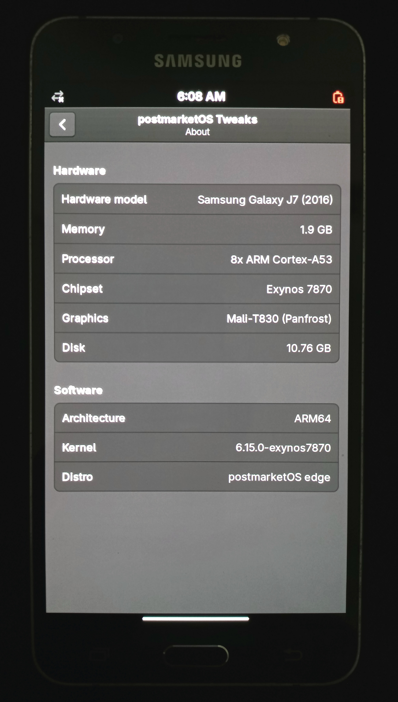

Samsung Galaxy J7 (2016) (samsung-j7xelte)
| This device runs a Downstream kernel. Some UIs will not work, and most features (3D acceleration, audio, etc.) may be broken. |
|
 Samsung Galaxy J7 (2016) running Phosh on mainline Linux 6.15 | |
| Manufacturer | Samsung |
|---|---|
| Name | Galaxy J7 (2016) |
| Codename | samsung-j7xelte |
| Released | 2016 |
| Type | handset |
| Hardware | |
| Chipset | Samsung Exynos 7870 Octa |
| CPU | 1.6GHz Octa-Core (Cortex-A53) |
| GPU | Mali-T830 MP1 |
| Display | 720 x 1280 Super AMOLED |
| Storage | 16 GB |
| Memory | 2 GB |
| Architecture | aarch64 |
| Software | |
Original software
The software and version the device was shipped with.
|
Android 6.0.1 (Linux 3.18.14) |
Extended version
The most recent supported version from the manufacturer.
|
Android 8.1 (Linux 3.18.14) |
| FOSS bootloader | no |
| postmarketOS | |
| Category | downstream |
Mainline
Instead of a Linux kernel fork, it is possible to run (Close to) Mainline.
|
no |
pmOS kernel
The kernel version that runs on the device's port.
|
3.18.14 |
| Device package |
|
| Kernel package |
|
{kind=link}
Flashing
Whether it is possible to flash the device with
pmbootstrap flasher. |
Works
|
|---|---|
USB Networking
After connecting the device with USB to your PC, you can connect to it via telnet (initramfs) or SSH (booted system).
|
Works
|
Internal storage
eMMC, SD cards, UFS...
|
Works
|
Battery
Whether charging and battery level reporting work.
|
Works
|
Screen
Whether the display works; ideally with sleep mode and brightness control.
|
Works
|
Touchscreen |
Works
|
| Multimedia | |
3D Acceleration |
Broken
|
Audio
Audio playback, microphone, headset and buttons.
|
Partial
|
Camera |
Broken
|
| Connectivity | |
WiFi |
Partial
|
Bluetooth |
Broken
|
GPS |
Broken
|
| Modem | |
Calls |
Broken
|
SMS |
Broken
|
Mobile data |
Broken
|
| Miscellaneous | |
FDE
Full disk encryption and unlocking with unl0kr.
|
Works
|
USB OTG
USB On-The-Go or USB-C Role switching.
|
Works
|
| Sensors | |
Accelerometer
Handles automatic screen rotation in many interfaces.
|
Broken
|
The Samsung Galaxy J7 (2016) is a mid-range smartphone released by Samsung in 2016.
Mainline status
There is an unmerged pmaports!7651 for the mainline port. If you want to test mainline Linux on the device right now, download the device tree indicated in the MR and compile  linux-postmarketos-exynos7870 manually with CONFIG_TOUCHSCREEN_MELFAS_MIP4 enabled.
linux-postmarketos-exynos7870 manually with CONFIG_TOUCHSCREEN_MELFAS_MIP4 enabled.
Preparation
Before installing postmarketOS, check that OEM Unlock is enabled in Developer Options.
Make sure you log out of any associated accounts, such as Google or Samsung accounts, to prevent factory reset protection–related issues from arising.
Also, make a backup of all important data.
Downstream
Installation
| WARNING: This is the downstream port! |
| WARNING: Never install systemd, as the downstream kernel is incompatible with it. |
Choose "edge" as the channel, “samsung” as the vendor and “j7xelte” as the codename:
$ pmbootstrap init
It is recommended to enable full disk encryption:
$ pmbootstrap install --fde
By default, the rootfs is flashed into the userdata partition, which is slightly larger than the system partition.
Power off the device, then press and hold Volume Down + Home + Power simultaneously to reboot into Download mode.
Afterwards, you can flash the kernel and the rootfs using the standard method:
$ pmbootstrap flasher flash_kernel
$ pmbootstrap flasher flash_rootfs
If the pmbootstrap flasher does not work correctly, or if you want to flash manually, you can do so using Heimdall:
$ heimdall flash --BOOT boot.img --USERDATA samsung-j7xelte.img
Status of interfaces
The downstream Samsung kernel is very old. It is impossible to run any modern user interface that uses GPU acceleration or Wayland. Only simple X interfaces based on lightdm seem to boot correctly.
Works
- mate (GUI brightness control is broken)
- sxmo
- xfce4 (app icons are broken)
Does not work
- none
- console
- buffyboard
- fbkeyboard
- plasma-desktop
- plasma-mobile
- gnome-desktop
- gnome-mobile
- phosh
- lxqt
- sxmo-de-sway
Troubleshooting
Audio
Audio kind of "works", as long as it doesn't hard reboot (Kernel panic?) for some reason. You may encounter this issue when running SXMO on it. Comment an audio initialization line in sxmo_hook_start.sh for it to partially fix it.
Wi-Fi connection fails
The Wi-Fi firmware is outdated and does not support 5 GHz or WPA3. It can only connect to 2.4 GHz networks.
If the 2.4 GHz encryption is set to WPA3-only or WPA2/WPA3 transition mode, it will refuse to connect and repeatedly prompt you for a new password, even if the correct one is entered.
To fix this, set the encryption to WPA2-PSK only in your router's configuration menu.
dmesg being spammed
The downstream kernel mishandles userspace-probed syscall and emits a warning each time, flooding the dmesg. The ideal fix is to patch the kernel source code, but introducing rate limiting significantly reduces the spam.
# cat <<EOF | tee /etc/sysctl.d/01-reduce-dmesg-spam.conf
kernel.printk_ratelimit = 120
kernel.printk_ratelimit_burst = 2
EOF
Serial debugging
This device has an S2MU005 MUIC, which exposes UART when a cable with either 150K or 619K resistance is plugged in. See the serial debugging for general information on this topic.
In order to halt S-BOOT and get access to its console, you must hold volume down while the device is powering on, in addition to mashing the enter button in your serial console. The easiest way to do this is to first remove the battery, connect the USB debug cable, hold power down, then start spamming enter in your console while you reinsert the battery.
Once you have gained access to the S-BOOT console, you can configure the bootloader to persistently enable UART logging from the booted kernel:
S-BOOT # setenv CMDLINE console=ttySAC2,115200 S-BOOT # saveenv S-BOOT # load_kernel S-BOOT # boot
Partition table
Number Start (sector) End (sector) Size Name
1 8192 16383 4096K BOTA0
2 16384 24575 4096K BOTA1
3 24576 65535 20.0M EFS
4 65536 81919 8192K CPEFS
5 81920 90111 4096K m9kefs1
6 90112 98303 4096K m9kefs2
7 98304 106495 4096K m9kefs3
8 106496 108543 1024K CARRIER
9 108544 124927 8192K PARAM
10 124928 190463 32.0M BOOT
11 190464 268287 38.0M RECOVERY
12 268288 284671 8192K OTA
13 284672 292863 4096K CDMA-RADIO
14 292864 473087 88.0M RADIO
15 473088 475135 1024K TOMBSTONES
16 475136 477183 1024K DNT
17 477184 478207 512K PERSISTENT
18 478208 502783 12.0M PERSDATA
19 502784 507903 2560K RESERVED2
20 507904 6651903 3000M SYSTEM
21 6651904 7061503 200M CACHE
22 7061504 7184383 60.0M HIDDEN
23 7184384 7194623 5120K CP_DEBUG
24 7194624 30763007 11.2G USERDATA
Notes
- The SoC is capable of running in 64-bit, but the stock Android OS runs in 32-bit mode.
- The postmarketOS port had a typo in the codename, where “jxelte” was used instead of “j7xelte”. This issue has been fixed.
Contributors
Users owning this device
See also
 device-samsung-j7xelte
device-samsung-j7xelte- linux-samsung-j7xelte
- firmware-samsung-j7xelte
- pmaports!1853 Initial merge request
- pmaports!7617 Correct typo in codename, allow Heimdall flashing